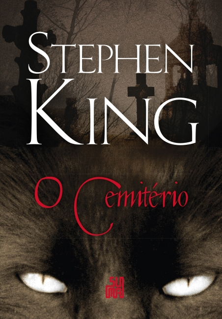

Gênero Terror
Sim Terror é o gênero mais queridinho e vou mostrar os meus 3 livros prefiridos nessa imensidão de horror.
Para quem é fã de leitura e adora histórias cheias de suspense, reviravoltas, personagens interessantes e muita tensão no ar,
os melhores livros de terror são essenciais na estante!
Os livros de terror e suspense estão em franca ascensão no mercado editorial, que aposta cada dia mais
nesses gêneros literários para entreter os leitores ávidos por histórias emocionantes, de ficção ou reais.
It: A Coisa, de Stephen King
Pennywise (chamado de Parcimonioso, em português) é uma entidade que assume diversas formas, principalmente a de um palhaço, para caçar e se alimentar de crianças.
A história acontece durante as férias de 1958, na pacata cidade de Derry, onde sete amigos começam a ter visões estranhas.
Eventualmente, eles acabam descobrindo que estavam vendo a mesma coisa: Pennywise.
O grupo enfrenta a entidade pela primeira vez e, quase 30 anos depois, a história se repete.

O Iluminado, de Stephen King
Essa obra de Sthephen King narra a história de Jack Torrance, que é alcoólatra em tratamento e deseja se tornar escritor.
Todos os problemas da família de Jack parecem se resolver quando ele aceita um emprego temporário como zelador do Hotel Overlook durante o inverno, mas o local esconde segredos antigos, além de espíritos malignos que ainda residem nos corredores.
O filho de Jack, Danny, é capaz de ouvir pensamentos e de se transportar no tempo.
Danny é aquilo que dá título ao livro: iluminado. Somente os poderes do menino podem se opor ao terror disseminado pelo Hotel Overlook.

Louis Creed é um jovem médico de Chicago que se muda para a cidade do Maine com a esposa e os filhos.
Em um dos primeiros passeios pelo lugar, eles conhecem um cemitério que fica perto da casa onde vão morar.
Os túmulos onde eram enterrados os animais de estimação de gerações de crianças escondem outro cemitério: uma terra maligna, que atrai pessoas com promessas sedutoras.
A princípio, Louis se diverte com as lendas contadas pelo vizinho Crandall, mas tudo muda quando o gato de Eillen, filha do protagonista, morre atropelado e, inexplicavelmente, volta à vida.
Para entender que mistérios se escondem no cemitério dos animais e se os humanos têm o direito de interferir no mundo dos mortos, Louis embarca em uma jornada sobrenatural, descobrindo que o limite entre a vida e a morte é irreal.
O Cemitério, de Stephen King
Louis Creed é um jovem médico de Chicago que se muda para a cidade do Maine com a esposa e os filhos.
Em um dos primeiros passeios pelo lugar, eles conhecem um cemitério que fica perto da casa onde vão morar.
Os túmulos onde eram enterrados os animais de estimação de gerações de crianças escondem outro cemitério: uma terra maligna, que atrai pessoas com promessas sedutoras.
A princípio, Louis se diverte com as lendas contadas pelo vizinho Crandall, mas tudo muda quando o gato de Eillen, filha do protagonista, morre atropelado e, inexplicavelmente, volta à vida.
Para entender que mistérios se escondem no cemitério dos animais e se os humanos têm o direito de interferir no mundo dos mortos, Louis embarca em uma jornada sobrenatural, descobrindo que o limite entre a vida e a morte é irreal.
Quais são os subgêneros do terror?
Agora que você já apresentei meus livros de terror preferido, que tal saber um pouco mais sobre os subgêneros dessa categoria?
Terror sobrenatural
Os livros de terror e suspense que apresentam vampiros, lobisomens, fantasmas, zumbis e outras criaturas são obras de terror sobrenatural. Espíritos, demônios e possessões apelam para os nossos medos mais profundos.
Terror psicológico
Histórias com personagens forçados a passar por situações extremas e com medo de perder a sanidade se encaixam no subgênero de terror psicológico. Essas situações podem acontecer em função de seres humanos — serial killers, por exemplo — ou de seres sobrenaturais.
Histórias reais
Os livros de contos de terror de não ficção costumam ser documentais ou biográficos, apresentando registros que acompanham histórias reais horripilantes. Autores de livros de terror não ficcionais podem se valer de fotos e outros documentos para validar a história contada.